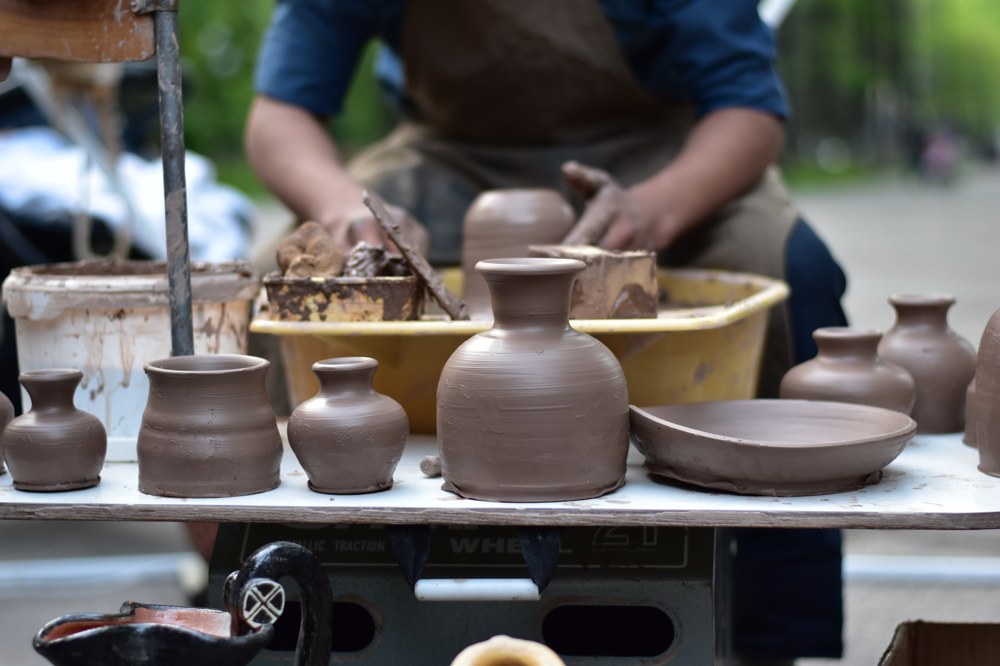

취미공방 혹은 취목공방(미목공공방): 본업이 있는 상태에서 취미로 자신이 원하는 가구를 직접 만드는 공방입니다. 주로 혼자 작업하는 공방으로 장소에 따라 베란다공방, 개인작업실 등이 있습니다.
모든 사항을 스스로 판단하고 결정하고 실행에 옮기기 때문에 간섭이 없어 자유롭다는 장점이 있는 반면에 부족한 실력(가구제작, 기계관리), 힘, 외로움과 비용 부담의 단점도 있습니다.그래서 자유롭다는 장점을 조금 포기하더라도, 단점을 보완할 수 있는 열쇠공방을 찾거나 만들게 됩니다.